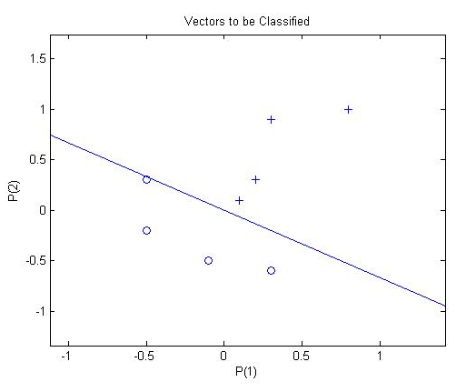
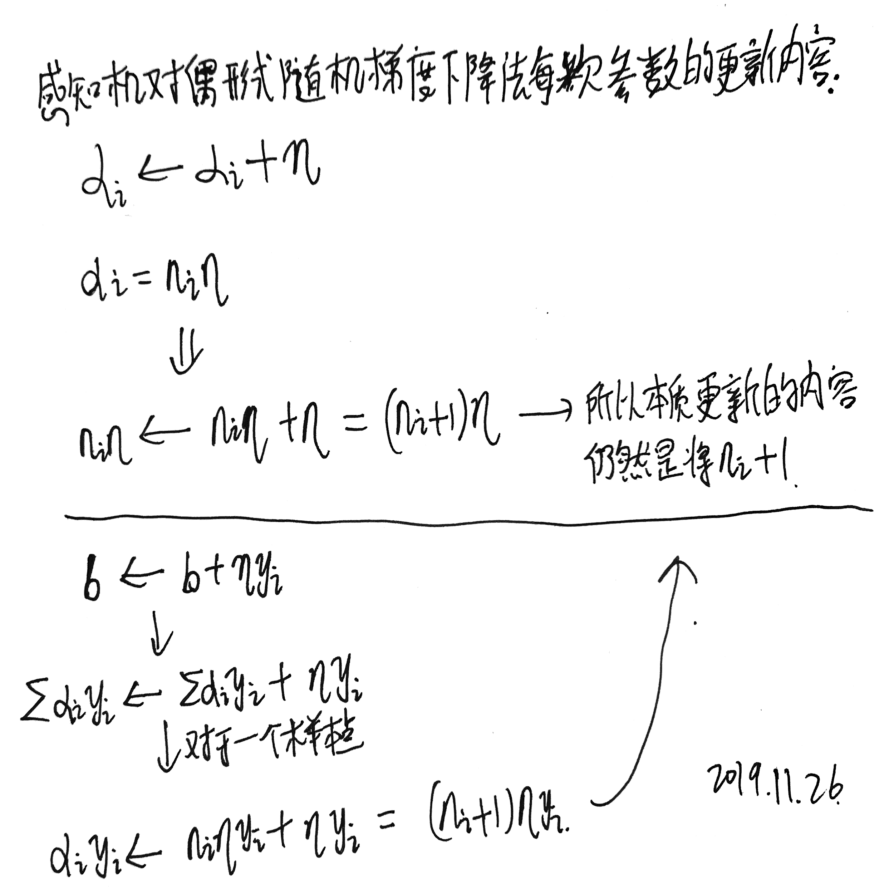
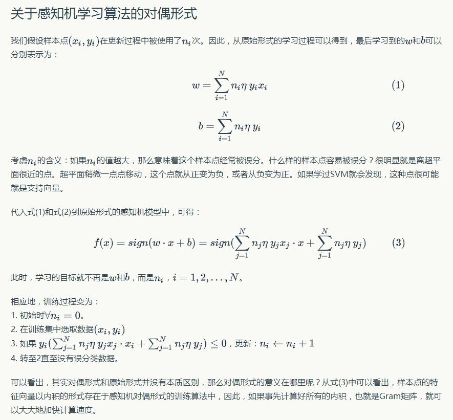
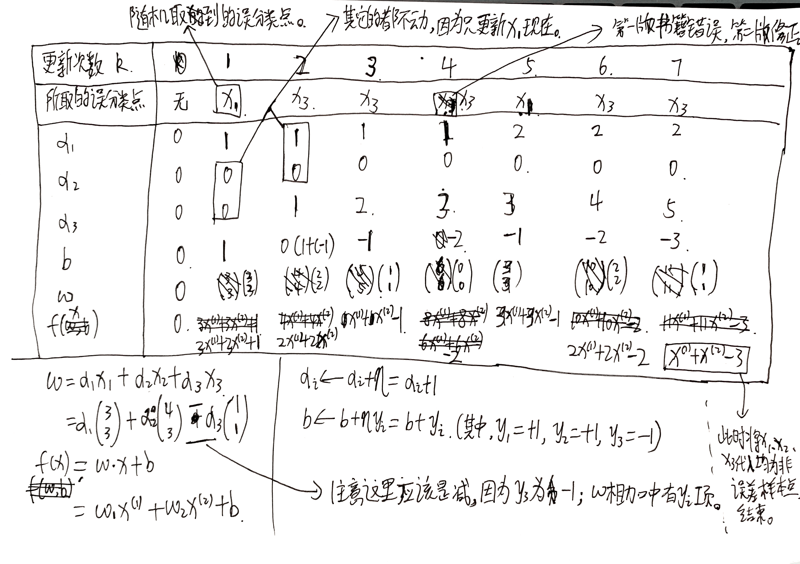

感知机(perceptron) 是二类分类的线性分类模型 ，其输入为实例的特征向量，输出为实例的类别，取+1和-1二值。感知机对应于输入空间(特征空间)中将实例划分为正负两类的分离超平面，属于判别模型。感知机旨在求出将训练数据进行线性划分的分离超平面。为此，导入基于误分类的损失函数，利用梯度下降法对损失函数进行极小化，求得感知机模型。感知机算法具有简单而易于实现的优点，分为原始形式和对偶形式。
假设输入空间(特征空间)是 X ⊆ R n \mathcal{X} \subseteq R^{n} X ⊆ R n Y = { + 1 , − 1 } \mathcal{Y}=\{+1,-1\} Y = { + 1 , − 1 } x ∈ X x \in \mathcal{X} x ∈ X y ∈ Y y \in \mathcal{Y} y ∈ Y
f ( x ) = sign ( w ⋅ x + b ) f(x)=\operatorname{sign}(w \cdot x+b) f ( x ) = s i g n ( w ⋅ x + b )
称为感知机。其中，𝑤 和 𝑏 为感知机模型参数，𝑤∈𝑅𝑛 叫做权值(weight)或权值向量(weight vector)，𝑏∈𝑅 叫做偏置(bisa)，𝑤⋅𝑥 表示 𝑤 和 𝑥 的内积。𝑠𝑖𝑔𝑛 是符号函数，即：
sign ( x ) = { + 1 x ≥ 0 − 1 x < 0 \operatorname{sign}(x)=\left\{\begin{array}{ll}{+1} & {x \geq 0} \\ {-1} & {x<0}\end{array}\right. s i g n ( x ) = { + 1 − 1 x ≥ 0 x < 0
感知机是一种线性分类模型，属于判别模型。感知机模型的假设空间是定义在特征空间中的所有 线性分类器模型(linear classification model)或线性分类器(linear classifier)，即函数集合 { f ∣ f ( x ) = w ⋅ x + b } \{f | f(x)=w \cdot x+b\} { f ∣ f ( x ) = w ⋅ x + b }
感知机有如下几何解释:线性方程
w ⋅ x + b = 0 w \cdot x+b=0 w ⋅ x + b = 0
对应于特征空间 𝑅𝑛 中的一个超平面 𝑆，其中 𝑤 是超平面的法向量，𝑏 是超平面的截距。这个超平面将特征空间划分两个部分，位于两部分的点(特征向量)分别被分为正、负两类。因此，超平面 𝑆 称为分离超平面(separating hyperplane)。 如图所示:

定义(数据集的线性可分性) ：给定一个数据集
T = { ( x 1 , y 1 ) , ( x 2 , y 2 ) , ⋯ , ( x N , y N ) } T=\left\{\left(x_{1}, y_{1}\right),\left(x_{2}, y_{2}\right), \cdots,\left(x_{N}, y_{N}\right)\right\} T = { ( x 1 , y 1 ) , ( x 2 , y 2 ) , ⋯ , ( x N , y N ) }
其中，x i ∈ X = R n , y i ∈ Y = { + 1 , − 1 } , i = 1 , 2 , ⋯ , N x_{i} \in \mathcal{X}=\mathbf{R}^{n}, \quad y_{i} \in \mathcal{Y}=\{+1,-1\}, \quad i=1,2, \cdots, N x i ∈ X = R n , y i ∈ Y = { + 1 , − 1 } , i = 1 , 2 , ⋯ , N
w ⋅ x + b = 0 w \cdot x+b=0 w ⋅ x + b = 0
能够将数据集的正实例点和负实例点完全正确地划分到超平面的两侧，即对所有 𝑦𝑖 =+1 的实例 𝑖，有 𝑤⋅𝑥𝑖 +𝑏>0，对所有 𝑦𝑖 =−1 的实例 𝑖，有 𝑤⋅𝑥𝑖 +<0，则称数据集 𝑇 为线性可分数据集(linearly separable data set),否则，称数据集 𝑇 线性不可分。
感知机的学习的目标是找到一个能够将训练正实例点和负实例点完全正确分离的超平面，即确定感知机模型参数 𝑤,𝑏，我们需要确定一个学习策略，也即定义(经验)损失函数并将损失函数极小化。
损失函数的一个自然选择是误分类点（误分类点：被错误的分类的样本点）的总数。但是，这样的损失函数不是参数 𝑤,𝑏 的连续可导函数，不易优化。损失函数的另一个选择是误分类点到超平面 𝑆 的总距离，这是感知机所采用的。
输入空间R n R^{n} R n x 0 x_{0} x 0 S S S
1 ∥ w ∥ ∣ w ⋅ x 0 + b ∣ \begin{aligned} & \dfrac{1}{\| w \|} \left| w \cdot x_{0} + b \right| \end{aligned} ∥ w ∥ 1 ∣ w ⋅ x 0 + b ∣
其中∥ w ∥ \| w \| ∥ w ∥ w w w L 2 L_{2} L 2
对于误分类数据( x i , y i ) \left( x_{i}, y_{i} \right) ( x i , y i ) w ⋅ x + b > 0 w \cdot x + b > 0 w ⋅ x + b > 0 y i = − 1 y_{i}=-1 y i = − 1 w ⋅ x + b < 0 w \cdot x + b < 0 w ⋅ x + b < 0 y i = + 1 y_{i}=+1 y i = + 1
− y i ( w ⋅ x i + b ) > 0 \begin{aligned} & -y_{i} \left( w \cdot x_{i} + b \right) > 0 \end{aligned} − y i ( w ⋅ x i + b ) > 0
误分类点x i x_{i} x i
− 1 ∥ w ∥ y i ( w ⋅ x i + b ) \begin{aligned} & -\dfrac{1}{\| w \|} y_{i}\left( w \cdot x_{i} + b \right) \end{aligned} − ∥ w ∥ 1 y i ( w ⋅ x i + b )
假设超平面S S S M M M S S S
− 1 ∥ w ∥ ∑ x i ∈ M y i ( w ⋅ x i + b ) \begin{aligned} & -\dfrac{1}{\| w \|} \sum_{x_{i} \in M} y_{i} \left( w \cdot x_{i} + b \right) \end{aligned} − ∥ w ∥ 1 x i ∈ M ∑ y i ( w ⋅ x i + b )
不考虑 1 ∥ w ∥ \frac{1}{\|w\|} ∥ w ∥ 1 误分类 ，即分类错误的样本点。公式中 M 是误分类点的集合。）
这里不考虑 1 ∥ w ∥ \frac{1}{\|w\|} ∥ w ∥ 1
带 1 ∥ w ∥ \frac{1}{\|w\|} ∥ w ∥ 1 1 ∥ w ∥ \frac{1}{\|w\|} ∥ w ∥ 1
给定训练数据集：
T = { ( x 1 , y 1 ) , ( x 2 , y 2 ) , ⋯ , ( x N , y N ) } \begin{aligned} & T = \left\{ \left( x_{1}, y_{1} \right), \left( x_{2}, y_{2} \right), \cdots, \left( x_{N}, y_{N} \right) \right\} \end{aligned} T = { ( x 1 , y 1 ) , ( x 2 , y 2 ) , ⋯ , ( x N , y N ) }
其中，x i ∈ X = R n , y i ∈ Y = { + 1 , − 1 } , i = 1 , 2 , ⋯ , N x_{i} \in \mathcal{X} = R^{n}, y_{i} \in \mathcal{Y} = \left\{ +1, -1 \right\}, i = 1, 2, \cdots, N x i ∈ X = R n , y i ∈ Y = { + 1 , − 1 } , i = 1 , 2 , ⋯ , N s i g n ( w ⋅ x + b ) sign \left( w \cdot x + b \right) s i g n ( w ⋅ x + b )
L ( w , b ) = − ∑ x i ∈ M y i ( w ⋅ x i + b ) \begin{aligned} & L \left( w, b \right) = -\sum_{x_{i} \in M} y_{i} \left( w \cdot x_{i} + b \right) \end{aligned} L ( w , b ) = − x i ∈ M ∑ y i ( w ⋅ x i + b )
其中，M M M
显然，损失函数𝐿(𝑤,𝑏)是非负的。如果没有误分类点，损失函数值是0，而且，误分类点越少，误分类点离超平面越近，损失函数就越小。一个特定的样本点的损失函数:在误分类时是参数𝑤,𝑏的线性函数，在正确分类时是0.因此，给定训练数据集𝑇，损失函数𝐿(𝑤,𝑏)是𝑤,𝑏的连续可导函数。
感知机学习的策略是在假设空间中选取使损失函数最小的模型参数𝑤,𝑏，即感知机模型。
感知机学习问题转化为求解损失函数式的最优化问题，最优化的方法是随机梯度下降法。
感知机学习算法的原始形式：
感知机学习算法是对以下最优化问题的算法。
给定训练数据集：
T = { ( x 1 , y 1 ) , ( x 2 , y 2 ) , ⋯ , ( x N , y N ) } \begin{aligned} & T = \left\{ \left( x_{1}, y_{1} \right), \left( x_{2}, y_{2} \right), \cdots, \left( x_{N}, y_{N} \right) \right\} \end{aligned} T = { ( x 1 , y 1 ) , ( x 2 , y 2 ) , ⋯ , ( x N , y N ) }
其中，x i ∈ X = R n , y i ∈ Y = { + 1 , − 1 } , i = 1 , 2 , ⋯ , N x_{i} \in \mathcal{X} = R^{n}, y_{i} \in \mathcal{Y} = \left\{ +1, -1 \right\}, i = 1, 2, \cdots, N x i ∈ X = R n , y i ∈ Y = { + 1 , − 1 } , i = 1 , 2 , ⋯ , N w w w b b b
min w , b L ( w , b ) = − ∑ x i ∈ M y i ( w ⋅ x i + b ) \begin{aligned} & \min_{w,b} L \left( w, b \right) = -\sum_{x_{i} \in M} y_{i} \left( w \cdot x_{i} + b \right) \end{aligned} w , b min L ( w , b ) = − x i ∈ M ∑ y i ( w ⋅ x i + b )
其中，M M M
感知机的学习算法是误分类驱动的，具体采用随机梯度下降法(stochastic gradient descent)。首先，任意选取一个超平面(𝑤0 ,𝑏0 ),然后利用梯度下降法不断地极小化目标函数。极小化过程中不是一次使𝑀中所有误分类点的梯度下降，而是一次随机选取一个误分类点使其梯度下降。
假设误分类点集合M M M L ( w , b ) L \left( w, b \right) L ( w , b )
∇ w L ( w , b ) = − ∑ x i ∈ M y i x i ∇ b L ( w , b ) = − ∑ x i ∈ M y i \begin{aligned} & \nabla _{w} L \left( w, b \right) = -\sum_{x_{i} \in M} y_{i} x_{i}
\\ & \nabla _{b} L \left( w, b \right) = -\sum_{x_{i} \in M} y_{i} \end{aligned}
∇ w L ( w , b ) = − x i ∈ M ∑ y i x i ∇ b L ( w , b ) = − x i ∈ M ∑ y i
随机选取一个误分类点( x i , y i ) \left( x_{i}, y_{i} \right) ( x i , y i ) w , b w, b w , b
w ← w + η y i x i b ← b + η y i \begin{aligned} & w \leftarrow w + \eta y_{i} x_{i}
\\ & b \leftarrow b + \eta y_{i} \end{aligned} w ← w + η y i x i b ← b + η y i
其中，η ( 0 < η ≤ 1 ) \eta \left( 0 < \eta \leq 1 \right) η ( 0 < η ≤ 1 )
算法(感知机学习算法的原始形式)：
感知机算法（原始形式）：
输入：训练数据集T = { ( x 1 , y 1 ) , ( x 2 , y 2 ) , ⋯ , ( x N , y N ) } T = \left\{ \left( x_{1}, y_{1} \right), \left( x_{2}, y_{2} \right), \cdots, \left( x_{N}, y_{N} \right) \right\} T = { ( x 1 , y 1 ) , ( x 2 , y 2 ) , ⋯ , ( x N , y N ) } x i ∈ X = R n , y i ∈ Y = { + 1 , − 1 } , i = 1 , 2 , ⋯ , N x_{i} \in \mathcal{X} = R^{n}, y_{i} \in \mathcal{Y} = \left\{ +1, -1 \right\}, i = 1, 2, \cdots, N x i ∈ X = R n , y i ∈ Y = { + 1 , − 1 } , i = 1 , 2 , ⋯ , N η ( 0 < η ≤ 1 ) \eta \left( 0 < \eta \leq 1 \right) η ( 0 < η ≤ 1 )
输出：w , b w,b w , b f ( x ) = s i g n ( w ⋅ x + b ) f \left( x \right) = sign \left( w \cdot x + b \right) f ( x ) = s i g n ( w ⋅ x + b )
选取初值w 0 , b 0 w_{0},b_{0} w 0 , b 0
在训练集中选取数据( x i , y i ) \left( x_{i}, y_{i} \right) ( x i , y i )
如果y i ( w ⋅ x i + b ) ≤ 0 y_{i} \left( w \cdot x_{i} + b \right) \leq 0 y i ( w ⋅ x i + b ) ≤ 0
w ← w + η y i x i b ← b + η y i \begin{aligned} & w \leftarrow w + \eta y_{i} x_{i}
\\ & b \leftarrow b + \eta y_{i} \end{aligned}
w ← w + η y i x i b ← b + η y i
转至2，直至训练集中没有误分类点。
这种学习算法直观上有如下解释:当一个实例点被误分类，即位于分离超平面的错误的一侧时，则调整𝑤,𝑏的值，使分离超平面向该误分类点的一侧移动，以减少该误分类点与超平面的距离，直至超平面越过该误分类点使其被正确分类。
感知机学习算法由于采用不同的初值或选取不同的误分类点，解可以不同。
算法的收敛性：
现在要证明，对于线性可分数据集感知机学习算法原始形式收敛，即经过有限次迭代可以得到一个将训练数据集完全正确划分的分离超平面感知机模型。
为了便于叙述，将偏置𝑏并入权重向量𝑤，记作：
w ^ = ( w T , b ) T \hat{w}=\left(w^{T}, b\right)^{T} w ^ = ( w T , b ) T
，同样也将输入向量加以扩充，加进常数1，记作：
x ^ = ( x T , 1 ) T \hat{x}=\left(x^{T}, 1\right)^{T} x ^ = ( x T , 1 ) T
这样：
x ^ ∈ R n + 1 , w ^ ∈ R n + 1 \hat{x} \in R^{n+1}, \hat{w} \in R^{n+1} x ^ ∈ R n + 1 , w ^ ∈ R n + 1
显然：
w ^ ⋅ x ^ = w ⋅ x + b \hat{w} \cdot \hat{x}=w \cdot x+b w ^ ⋅ x ^ = w ⋅ x + b
定理(Novikoff): 设训练数据集 T = { ( x 1 , y 1 ) , ( x 2 , y 2 ) , ⋯ , ( x N , y N ) } T=\{(x_1,y_1),(x_2,y_2),\cdots,(x_N,y_N)\} T = { ( x 1 , y 1 ) , ( x 2 , y 2 ) , ⋯ , ( x N , y N ) } x i ∈ X = R n , y i ∈ Y = { − 1 , + 1 } , i = 1 , 2 , ⋯ , N x_{i} \in \mathcal{X}=R^{n}, y_{i} \in \mathcal{Y}=\{-1,+1\}, i=1,2, \cdots, \mathcal{N} x i ∈ X = R n , y i ∈ Y = { − 1 , + 1 } , i = 1 , 2 , ⋯ , N
(1) 存在满足条件：
∥ w ^ o p t ∥ = 1 \Vert\hat{w}_{opt}\Vert=1 ∥ w ^ o p t ∥ = 1
的超平面:
x ^ o p t ⋅ x ^ = w o p t ⋅ x + b o p t = 0 \hat{x}_{opt}\cdot\hat{x}=w_{opt}\cdot x + b_{opt}=0 x ^ o p t ⋅ x ^ = w o p t ⋅ x + b o p t = 0
将训练数据集完全正确分开；且存在𝛾>0，对所有𝑖=1,2,⋯,𝑁:
y i ( w ^ o p t ⋅ x ^ i ) = y i ( w o p t ⋅ x i + b o p t ) ≥ γ y_{i}\left(\hat{w}_{o p t} \cdot \hat{x}_{i}\right)=y_{i}\left(w_{o p t} \cdot x_{i}+b_{o p t}\right) \geq \gamma y i ( w ^ o p t ⋅ x ^ i ) = y i ( w o p t ⋅ x i + b o p t ) ≥ γ
(2)令:
R = max 1 ≤ i ≤ N ∥ x ^ i ∥ R=\max_{1\le i\le N}\Vert\hat{x}_i\Vert R = 1 ≤ i ≤ N max ∥ x ^ i ∥
则感知机算法在训练数据集上的误分类次数𝑘满足不等式:
k ≤ ( R γ ) 2 \begin{matrix}
k\le\left(\frac{R}{\gamma}\right)^2
\end{matrix} k ≤ ( γ R ) 2
证明 (1) 由于训练数据集是线性可分的，按照定义，存在超平面可将训练数据集完全分开，取此超平面为：
w ^ o p t ⋅ x ^ = w o p t ⋅ x + b o p t = 0 \hat{w}_{opt}\cdot\hat{x}=w_{opt}\cdot x + b_{opt}=0 w ^ o p t ⋅ x ^ = w o p t ⋅ x + b o p t = 0
使 ∥ w ^ o p t ∥ = 1 \Vert\hat{w}_{opt}\Vert=1 ∥ w ^ o p t ∥ = 1
y i ( x ^ o p t ⋅ x ^ i ) = y i ( w o p t ⋅ x i + b o p t ) > 0 \begin{matrix}
y_i(\hat{x}_{opt}\cdot \hat{x}_i)=y_i(w_{opt}\cdot x_i + b_{opt}) > 0
\end{matrix} y i ( x ^ o p t ⋅ x ^ i ) = y i ( w o p t ⋅ x i + b o p t ) > 0
所以存在：
γ = min i y i ( w o p t ⋅ x i + b o p t ) \begin{matrix}
\gamma=\min_{i}{y_i(w_{opt}\cdot x_i+b_{opt})}
\end{matrix} γ = min i y i ( w o p t ⋅ x i + b o p t )
使：
y i ( w ^ o p t ⋅ x ^ ) = y i ( w o p t ⋅ x i + b o p t ) ≥ γ ( 1 ) \begin{matrix}
y_i(\hat{w}_{opt}\cdot\hat{x})=y_i(w_{opt}\cdot x_i + b_{opt})\ge\gamma \tag{$1$} \\
\end{matrix} y i ( w ^ o p t ⋅ x ^ ) = y i ( w o p t ⋅ x i + b o p t ) ≥ γ ( 1 )
(2)感知机算法从 w ^ 0 = 0 \hat{w}_0=0 w ^ 0 = 0 x ^ k − 1 \hat{x}_{k-1} x ^ k − 1
w ^ k − 1 = ( w k − 1 T , b k − 1 ) T \begin{matrix}
\hat{w}_{k-1}=(w_{k-1}^T,b_{k-1})^T
\end{matrix} w ^ k − 1 = ( w k − 1 T , b k − 1 ) T
k 和 i 值并不一定是完全相等的，这里的 k 应该是权重更新的次数，而 i 是样本的编号，只是是误分类样本。
则第k个误分类实例的条件是：
y i ( w ^ k − 1 ⋅ x ^ i ) = y i ( w k − 1 ⋅ x i + b k − 1 ) ≤ 0 ( 4 ) \begin{matrix}
y_i(\hat{w}_{k-1}\cdot\hat{x}_i)=y_i(w_{k-1}\cdot x_i+b_{k-1}) \le 0 \tag{$4$} \\
\end{matrix} y i ( w ^ k − 1 ⋅ x ^ i ) = y i ( w k − 1 ⋅ x i + b k − 1 ) ≤ 0 ( 4 )
若 ( x i , y i ) (x_i,y_i) ( x i , y i ) w ^ k − 1 = ( w k − 1 T , b k − 1 ) T \hat{w}_{k-1}=(w_{k-1}^T,b_{k-1})^T w ^ k − 1 = ( w k − 1 T , b k − 1 ) T
w k ← w k − 1 + γ y i x i b k ← b k − 1 + γ y i \begin{matrix}
w_k\leftarrow w_{k-1}+\gamma y_ix_i\\\\
b_k\leftarrow b_{k-1}+\gamma y_i
\end{matrix} w k ← w k − 1 + γ y i x i b k ← b k − 1 + γ y i
即：
w ^ k = w ^ k − 1 + γ y i x ^ i ( 2 ) \begin{matrix}
\hat{w}_k=\hat{w}_{k-1}+\gamma y_i\hat{x}_i \tag{$2$} \\ \end{matrix} w ^ k = w ^ k − 1 + γ y i x ^ i ( 2 )
接下来进行两个不等式的推导：
(1) w ^ k ⋅ w ^ o p t ≥ k η γ ( 3 ) \begin{matrix}
\hat{w}_k\cdot\hat{w}_{opt}\ge k\eta\gamma \tag{$3$} \\ \end{matrix} w ^ k ⋅ w ^ o p t ≥ k η γ ( 3 )
由式(1)及式(2)得：
w ^ k ⋅ w ^ o p t = w ^ k − 1 ⋅ w ^ o p t + η y i w ^ o p t ⋅ x ^ i ≥ w ^ k − 1 ⋅ w ^ o p t + η γ \begin{matrix}
\hat{w}_k\cdot\hat{w}_{opt}=\hat{w}_{k-1}\cdot\hat{w}_{opt}+\eta y_i\hat{w}_{opt}\cdot\hat{x}_i\ge\hat{w}_{k-1}\cdot\hat{w}_{opt}+\eta\gamma
\end{matrix} w ^ k ⋅ w ^ o p t = w ^ k − 1 ⋅ w ^ o p t + η y i w ^ o p t ⋅ x ^ i ≥ w ^ k − 1 ⋅ w ^ o p t + η γ
由此递推即得不等式(3)：
x ^ k ⋅ w ^ o p t ≥ x ^ k − 1 ⋅ w ^ o p t + η γ ≥ x ^ k − 2 ⋅ w ^ o p t + 2 η γ ≥ ⋯ ≥ k η γ \begin{matrix}
\hat{x}_k\cdot\hat{w}_{opt}\ge\hat{x}_{k-1}\cdot\hat{w}_{opt}+\eta\gamma\ge\hat{x}_{k-2}\cdot\hat{w}_{opt}+2\eta\gamma\ge\cdots\ge k\eta\gamma
\end{matrix} x ^ k ⋅ w ^ o p t ≥ x ^ k − 1 ⋅ w ^ o p t + η γ ≥ x ^ k − 2 ⋅ w ^ o p t + 2 η γ ≥ ⋯ ≥ k η γ
(2) ∥ w ^ k ∥ 2 ≤ k η 2 R 2 ( 5 ) \begin{matrix}
\Vert\hat{w}_{k}\Vert^2\le k\eta^2R^2\end{matrix} \tag{$5$} ∥ w ^ k ∥ 2 ≤ k η 2 R 2 ( 5 )
由式(2)及式(4)得：
∥ x ^ k ∥ 2 = ∥ x ^ k − 1 ∥ 2 + 2 η y i w ^ k − 1 ⋅ x ^ i + η 2 ∥ x ^ i ∥ 2 ≤ ∥ x ^ k − 1 ∥ 2 + η 2 ∥ x ^ i ∥ 2 ≤ ∥ x ^ k − 1 ∥ 2 + η 2 R 2 ≤ ∥ x ^ k − 2 ∥ 2 + 2 η 2 R 2 ≤ ⋯ ≤ k η 2 R 2 \begin{matrix}
\begin{aligned}
\Vert\hat{x}_k\Vert^2&=\Vert\hat{x}_{k-1}\Vert^2+2\eta y_i\hat{w}_{k-1}\cdot\hat{x}_i+\eta^2\Vert\hat{x}_i\Vert^2\\
&\le\Vert\hat{x}_{k-1}\Vert^2+\eta^2\Vert\hat{x}_i\Vert^2\\
&\le\Vert\hat{x}_{k-1}\Vert^2+\eta^2R^2\\
&\le\Vert\hat{x}_{k-2}\Vert^2+2\eta^2R^2\le\cdots\\
&\le k\eta^2R^2
\end{aligned}
\end{matrix} ∥ x ^ k ∥ 2 = ∥ x ^ k − 1 ∥ 2 + 2 η y i w ^ k − 1 ⋅ x ^ i + η 2 ∥ x ^ i ∥ 2 ≤ ∥ x ^ k − 1 ∥ 2 + η 2 ∥ x ^ i ∥ 2 ≤ ∥ x ^ k − 1 ∥ 2 + η 2 R 2 ≤ ∥ x ^ k − 2 ∥ 2 + 2 η 2 R 2 ≤ ⋯ ≤ k η 2 R 2
上式中第一行到第二行的推导成立的原因是：因为 yi 是误分类点，所以中间那项是小于 0 的。
结合不等式(3)及不等式(5)即得：
k η γ ≤ w ^ k ⋅ w ^ o p t ≤ ∥ w ^ k ∥ ∥ w ^ o p t ∥ ≤ k η R k 2 γ 2 ≤ k R 2 \begin{matrix}
k\eta\gamma\le \hat{w}_k\cdot\hat{w}_{opt}\le\Vert\hat{w}_k\Vert\Vert\hat{w}_{opt}\Vert\le\sqrt{k}\eta R\\
k^2\gamma^2\le kR^2
\end{matrix} k η γ ≤ w ^ k ⋅ w ^ o p t ≤ ∥ w ^ k ∥ ∥ w ^ o p t ∥ ≤ k η R k 2 γ 2 ≤ k R 2
于是：
k ≤ ( R γ ) 2 \begin{matrix}
k\le\left(\frac{R}{\gamma}\right)^2
\end{matrix} k ≤ ( γ R ) 2
定理表明，误分类的次数𝑘是有上界的，经过有限次搜索可以找到将训练数据完全正确分开的分离超平面。也就是说，当训练数据集线性可分时，感知机学习算法原始形式迭代是收敛的。感知机学习算法存在许多解，这些解既依赖于初值的选择，也依赖于迭代过程中误分类点的选择顺序。为了得到唯一的超平面，需要对分离超平面增加约束条件。当训练集线性不可分时，感知机算法不收敛，迭代结果会发生震荡。
感知机学习算法的对偶形式：
对偶形式的基本思想是，将𝑤和𝑏表示为实例𝑥𝑖 和标记𝑦𝑖 的线性组合的形式，通过求解其系数而求得𝑤和𝑏。不是一般性，在原始算法中，可假设初值𝑤0 ,𝑏0 均为0.对误分类点(𝑥𝑖 ,𝑦𝑖 )通过：
w ← w + η y i x i b ← b + η y i \begin{matrix}
w\leftarrow w+\eta y_ix_i\\\\
b\leftarrow b+\eta y_i
\end{matrix} w ← w + η y i x i b ← b + η y i
逐步修改𝑤,𝑏。
设 w , b w,b w , b 修改 n 次 ，则w , b w,b w , b ( x i , y i ) \left( x_{i}, y_{i} \right) ( x i , y i ) α i y i x i \alpha_{i} y_{i} x_{i} α i y i x i α i y i \alpha_{i} y_{i} α i y i α i = n i η \alpha_{i} = n_{i} \eta α i = n i η 最终 学习到的𝑤,𝑏可以分别表示为w , b w,b w , b
w = ∑ i = 1 N α i y i x i b = ∑ i = 1 N α i y i \begin{aligned}& w = \sum_{i=1}^{N} \alpha_{i} y_{i} x_{i}
\\ & b = \sum_{i=1}^{N} \alpha_{i} y_{i} \end{aligned} w = i = 1 ∑ N α i y i x i b = i = 1 ∑ N α i y i
理解： w 可以表示为，对于其中的一个样本，其更新的内容可以表示为 α i y i x i \alpha_{i} y_{i} x_{i} α i y i x i α i = n i η \alpha_{i} = n_{i} \eta α i = n i η
也就是说，总的来看 w 的更新，其在更新的过程中，“因为”这个样本点而更新的参数变化可以表示为上式的求和；这样的话，上式中的 ni 就表示这一样本被当成误分类点然后被更新的次数。
自然而然可以想到，最终的 w 就是所有样本点进行上述更新的求和（包括那些可能一次都没有被作为误分类点一直正确的样本，只是它们前面的 ni 是 0）。
其中，α i ≥ 0 , i = 1 , 2 , ⋯ , N \alpha_{i} \geq 0, i=1,2, \cdots, N α i ≥ 0 , i = 1 , 2 , ⋯ , N 表示第𝑖个实例点由于误分而进行更新的次数 。实例点更新次数越多，意味着它距离超平面越近，也就越难正确分类。
感知机算法（对偶形式）：
输入：训练数据集T = { ( x 1 , y 1 ) , ( x 2 , y 2 ) , ⋯ , ( x N , y N ) } T = \left\{ \left( x_{1}, y_{1} \right), \left( x_{2}, y_{2} \right), \cdots, \left( x_{N}, y_{N} \right) \right\} T = { ( x 1 , y 1 ) , ( x 2 , y 2 ) , ⋯ , ( x N , y N ) } x i ∈ X = R n , y i ∈ Y = { + 1 , − 1 } , i = 1 , 2 , ⋯ , N x_{i} \in \mathcal{X} = R^{n}, y_{i} \in \mathcal{Y} = \left\{ +1, -1 \right\}, i = 1, 2, \cdots, N x i ∈ X = R n , y i ∈ Y = { + 1 , − 1 } , i = 1 , 2 , ⋯ , N η ( 0 < η ≤ 1 ) \eta \left( 0 < \eta \leq 1 \right) η ( 0 < η ≤ 1 )
输出：α , b \alpha,b α , b f ( x ) = s i g n ( ∑ j = 1 N α j y j x j ⋅ x + b ) f \left( x \right) = sign \left( \sum_{j=1}^{N} \alpha_{j} y_{j} x_{j} \cdot x + b \right) f ( x ) = s i g n ( ∑ j = 1 N α j y j x j ⋅ x + b ) α = ( α 1 , α 2 , ⋯ , α N ) T \alpha = \left( \alpha_{1}, \alpha_{2}, \cdots, \alpha_{N} \right)^{T} α = ( α 1 , α 2 , ⋯ , α N ) T
α ← 0 , b ← 0 \alpha \leftarrow 0, b \leftarrow 0 α ← 0 , b ← 0 在训练集中选取数据( x i , y i ) \left( x_{i}, y_{i} \right) ( x i , y i )
如果y i ( ∑ j = 1 N α j y j x j ⋅ x i + b ) ≤ 0 y_{i} \left( \sum_{j=1}^{N} \alpha_{j} y_{j} x_{j} \cdot x_{i} + b \right) \leq 0 y i ( ∑ j = 1 N α j y j x j ⋅ x i + b ) ≤ 0
α i ← α i + η b ← b + η y i \begin{aligned}& \alpha_{i} \leftarrow \alpha_{i} + \eta
\\ & b \leftarrow b + \eta y_{i} \end{aligned} α i ← α i + η b ← b + η y i
在理解这里的时候参考下下下面那张图中的内容；然后阅读理解以下内容：

所以最后的结论就是，上述所述的更新内容与下下面那张图中所述的更新内容是一样的，本质上仍然是每次只是让 ni 加 1。
b 的更新和之前采用的是“原始的”、“简单的”形式的更新内容一致。
转至2，直至训练集中没有误分类点。
理解： 更新的时候是这样的：
从之前 w 和 b 最终结果的表达式可以看出，w 和 b 是由每次更新所取的误分类点的 n i y i x i \ n_{i} y_{i} x_{i} n i y i x i i 为 0）， y i x i \ y_{i} x_{i} y i x i i 。
所以在利用 随机 梯度下降法的时候，每次随机取出一个样本点，然后判断它是不是误分类点，如果是误分类点，就将其前面的 ni 加 1，然后让加 1 后的 ni 与 y i x i \ y_{i} x_{i} y i x i
对偶形式中训练实例仅以内积形式出现，可预先计算G r a m Gram G r a m
G = [ x i ⋅ x j ] N × N \begin{aligned}& G = \left[ x_{i} \cdot x_{j} \right]_{N \times N} \end{aligned} G = [ x i ⋅ x j ] N × N

接下来看一个例子：
例子：正样本点是 x 1 = ( 3 , 3 ) T , x 2 = ( 4 , 3 ) T x_{1}=(3,3)^{\mathrm{T}}, \quad x_{2}=(4,3)^{\mathrm{T}} x 1 = ( 3 , 3 ) T , x 2 = ( 4 , 3 ) T x 3 = ( 1 , 1 ) T x_{3}=(1,1)^{\mathrm{T}} x 3 = ( 1 , 1 ) T
解：按照上述算法：
(1) 取 α i = 0 , i = 1 , 2 , 3 , b = 0 , η = 1 \alpha_{i}=0, \quad i=1,2,3, \quad b=0, \quad \eta=1 α i = 0 , i = 1 , 2 , 3 , b = 0 , η = 1
(2) 计算 Gram 矩阵：
G = [ 18 21 6 21 25 7 6 7 2 ] G=\left[\begin{array}{ccc}{18} & {21} & {6} \\ {21} & {25} & {7} \\ {6} & {7} & {2}\end{array}\right] G = ⎣ ⎢ ⎡ 1 8 2 1 6 2 1 2 5 7 6 7 2 ⎦ ⎥ ⎤
注意这个矩阵关于主对角线是对称的。其每一项的值是该位置所对应的两个 xi 之间的内积的值。
(3) 误分条件：
y i ( ∑ j = 1 N α j y j x j ⋅ x i + b ) ⩽ 0 y_{i}\left(\sum_{j=1}^{N} \alpha_{j} y_{j} x_{j} \cdot x_{i}+b\right) \leqslant 0 y i ( j = 1 ∑ N α j y j x j ⋅ x i + b ) ⩽ 0
参数更新：
α i ← α i + 1 , b ← b + y i \alpha_{i} \leftarrow \alpha_{i}+1,\quad b \leftarrow b+y_{i} α i ← α i + 1 , b ← b + y i
(4) 迭代；结果见下图：
下图 中有一个地方是有点小问题的就是，在每次更新完之后，判断随机选取的样本是不是误分类样本点的时候，应该不是像我下面写的那样每次都把最终的模型函数计算出来，然后代进去看是否小于 0（为如果这样的话就不会用到 Gram 矩阵中的数据了，也就体现不出对偶形式的优势了），而是根据上述所述（第 (3) 步）中条件来进行判断，也就用到 Gram 中的数据了。
带“表格”的版本：

(5)
w = 2 x 1 + 0 x 2 − 5 x 3 = ( 1 , 1 ) T w=2 x_{1}+0 x_{2}-5 x_{3}=(1,1)^{\mathrm{T}} w = 2 x 1 + 0 x 2 − 5 x 3 = ( 1 , 1 ) T
b = − 3 b=-3 b = − 3
分离超平面：
x ( 1 ) + x ( 2 ) − 3 = 0 x^{(1)}+x^{(2)}-3=0 x ( 1 ) + x ( 2 ) − 3 = 0
感知机模型：
f ( x ) = sign ( x ( 1 ) + x ( 2 ) − 3 ) f(x)=\operatorname{sign}\left(x^{(1)}+x^{(2)}-3\right) f ( x ) = s i g n ( x ( 1 ) + x ( 2 ) − 3 )
与原始形式一样，感知机学习算法的对偶形式迭代也是收敛的，存在多个解。
在感知机中采用随机梯度下降法而不是采用梯度下降法的原因：
可能数据量比较大，如果每次都把所有的误分类点想加求和去更新参数，就会使得计算量比较大。这一点原因比较普适，在感知机中并不特殊。
还有一个原因是，在感知机中，当每次只计算一个误分类点之后，可能“之前”后面的误分类点就不再是误分类点了，所以实际上就不应该再把后面的往进加了（不确定梯度下降法中每次更新参数加所有的误分类点的时候是“一次性”把所有的误分类点都加进去，还是在加之前会先判断每个之前的误分类点还是不是误分类点。），后面只需要找到其它误分类点进行参数更新就可以了。